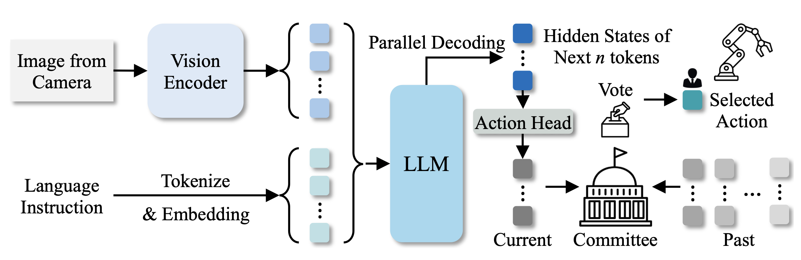
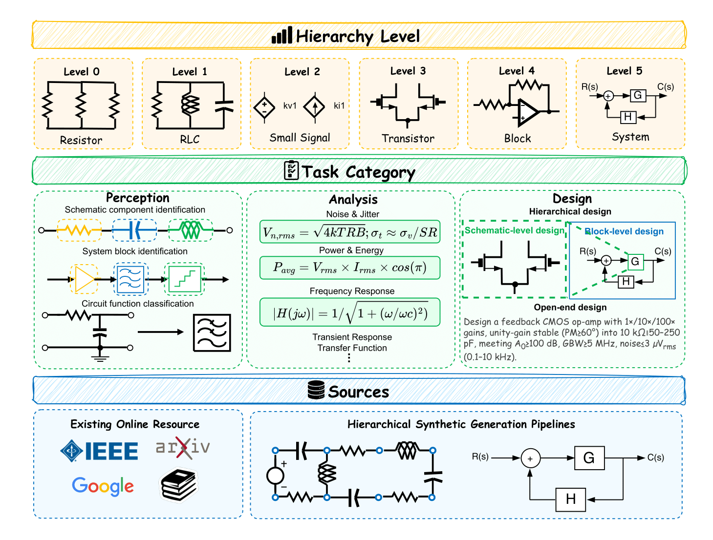
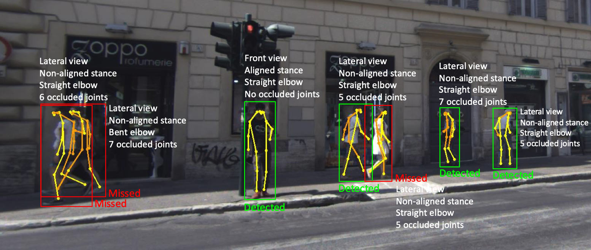
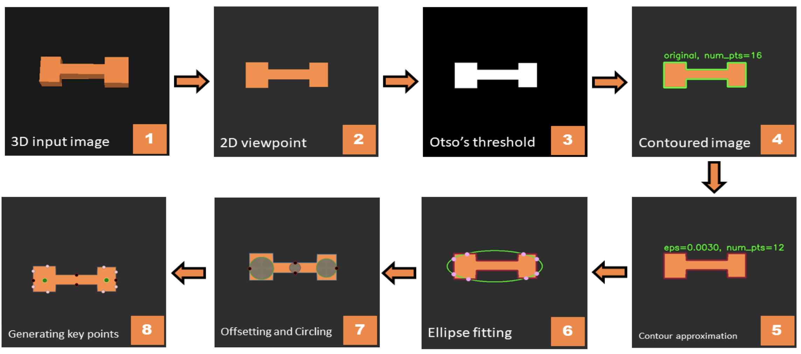

{kind=link}
Research
My research centers on Efficient AI. I develop methods to accelerate pre-training, fine-tuning, and inference of generative models. My work includes model compression, optimization for large language and vision models, and designing fast, robust architectures that reduce computational cost without sacrificing performance.
News
- 26/01/2026 🚀 CircuitSense (full version) got accepted in ICLR 2026!
- 17/10/2025 CircuitSense got accepted in NeurIPS 2025 MATH-AI, The 5th Workshop on Mathematical Reasoning and AI and will be presented in San Diego Convention Center on December 6th.
- 09/30/2025 We release our paper Beyond Overall Accuracy: Pose- and Occlusion-driven Fairness Analysis in Pedestrian Detection for Autonomous Driving on ArXiv.
- 09/29/2025 We arxived CircuitSense and the hierarchical synthetic generation code.
- 13/07/2025 We released the preprint of our paper, VOTE: Vision‑Language‑Action Optimization with Trajectory Ensemble Voting on arXiv.
- 13/09/2024 I am starting my PhD at Northeastern University.
Selected Publications
Preprints

We propose VOTE, an efficient and general framework for the optimization and acceleration of VLA models.
Published

We present CircuitSense, a benchmark of 8,006+ problems evaluating circuit understanding across three tasks—Perception, Analysis, and Design—with emphasis on deriving symbolic equations from visual inputs. Additionally, we propose a hierarchical synthetic pipeline that generates schematics and block diagrams with guaranteed ground-truth equations.

In this work, we systematically investigate how variations in the pedestrian pose—including leg status, elbow status, and body orientation—as well as individual joint occlusions, affect detection performance.

In this paper, a geometry-based algorithm is presented which can find grasp poses based on the geometry of the unknown object and propose the ones which may lead to successful grasping.
Professional Services
- Conference Reviewer
- NeurIPS'25, ICCV'25